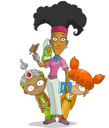

|

Frequently Asked Questions
What is a virtual world?
A virtual world is an online community providing an interactive simulated environment. Users create visual representations for themselves (an Avatar) and meet other users who enter the site at the same time.
In ekoloko’s virtual world, kids choose how active or passive they want to be: they can interact with other users and play games and solve quests and design their moon house and work their farm – or just do part of these things. Every kid can find his or her place on ekoloko.
Back To Top.

What is so different about ekoloko?
The main thing that makes ekoloko different is its content. Every word, game or quest on ekoloko goes through an ecological, educational, social or community filter and was developed with kids in mind. ekoloko may be a virtual world but it deals with issues that are taken from real life.
We also put the well-being of our users first. Because we are also parents, we know the importance of taking a break from the computer and having a well-rounded life – at ekoloko we send out reminders every so often encouraging users to take a break and do something else, and users are restricted to the number of hours they can play each day on the site.
Back To Top.
How do kids communicate with each other?
ekoloko utilizes advanced white list chat technology to enable users to communicate safely and ensure that no personal information can be shared by only allowing them to choose from a dictionary of approved words. The chat mechanism blocks any rude or inappropriate language, and users attempting to use such language will temporarily lose their chatting rights. The chat is limited to public areas and kids cannot go into private chat rooms. If they want to say something to a friend that only the friend can see, they will be able to select a message from a pre-defined list of options.
In addition, ekoloko employs highly trained and experienced staff (moderators) who move around the ekoloko community interacting with kids and reminding them of the rules of conduct and Internet safety.
Back To Top.
What exactly do kids do there?
The first time your child enters ekoloko, they will create their Eko, the character (avatar) that will represent them in ekoloko. There is a wide variety of looks, fashions and accessories so that each Eko can be as different and unique as imagination allows.
Then, ekoloko offers a wide range of activities that your kids can choose from on any given day. These activities enable users to:
- Advance in levels –While moving around ekoloko, kids are presented with many different activities and challenging quests. Completing these quests will not only provide them with a sense of accomplishment and an understanding of the world of ekoloko, but will also reward them with activity points that allow them to level up, and with ‘Kokos’, the local currency on ekoloko. Using Kokos, kids can purchase additional items for their Eko.
- Interact – ekoloko is a social experience and many kids are there so that they can interact with their friends and other Ekos in a supportive non-threatening environment. Some kids simply have fun hanging out and playing one-on-one games with other users, or enjoy sharing the adventures they discover while being on ekoloko.
- Advance socially – While ekoloko has a place for every kind of user, like those who only want to design their moon homes and tend their gardens or those who only want to solve quests, we encourage users to become truly involved and active in the community. We offer users the ability to become ekoloko Rangers, users who have proven their reliability, responsibility and dedication to the principles of ekoloko. Rangers are users who have special abilities to help and guide other users, both in getting around ekoloko and solving quests as well as with reminding them of the rules of safety and good conduct while in our world. Becoming a Ranger motivates kids to be more responsible users, makes their experience on ekoloko more engaging and meaningful, and encourages them to become more involved in the real world.
Back To Top.
Is it dangerous?
Our number one priority is your child’s privacy and safety. We work hard to make ekoloko a pleasant, supportive and unintimidating environment. We implement a system that combines technology, live moderation and ongoing education to make sure our strict safety standards are met.
Back To Top.
Does ekoloko cost money?
Registration and entry to ekoloko is and will remain free of charge. However, your child will be offered to join the elite group of Pioneers who take upon themselves to discover the new frontiers of ekoloko and as such have access to certain areas not available to all users. Becoming a Pioneer requires the payment of membership fees.
Back To Top.
Who are the ekoloko Rangers?
The ekoloko Rangers are kids who wished to become even more active in the ekolokian community and had proven themselves as devoted and helpful users. Kids that qualify to become Rangers receive in-world training and take on responsibilities like helping new users and making sure that the rules of conduct are observed. They can be identified by the angel's halo over their heads.
Back To Top.
What happens when my child finishes all the quests?
New quests, games and activities are added to ekoloko on a regular basis. In addition, each day offers users new and different experiences and interactions – and kids can always find new adventures to engage in, whether it is meeting new friends, trading items or playing games, or accessing new features available to them once they reach a certain level.
Back To Top.
|